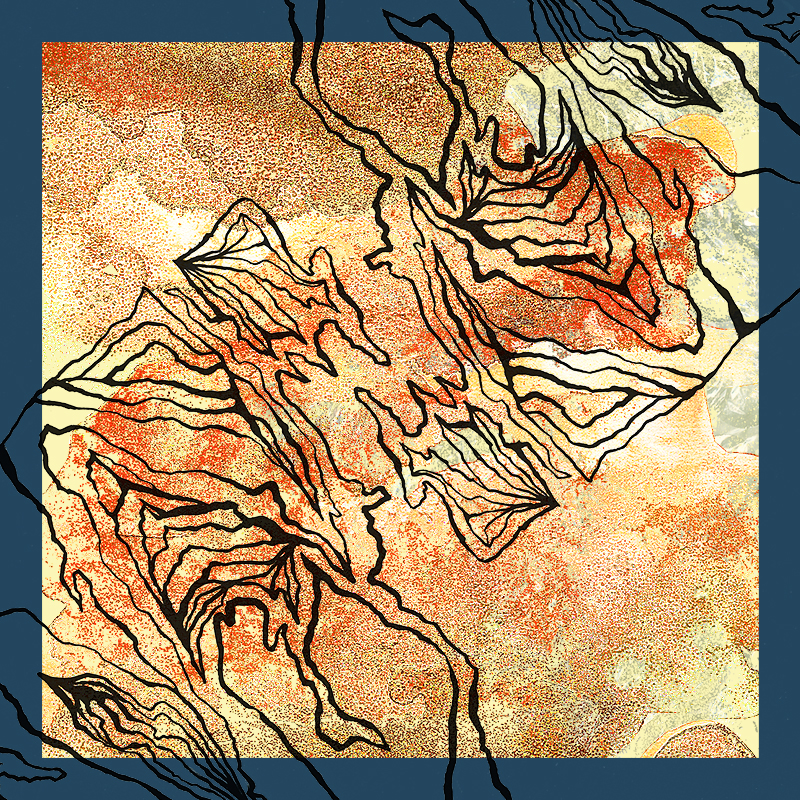
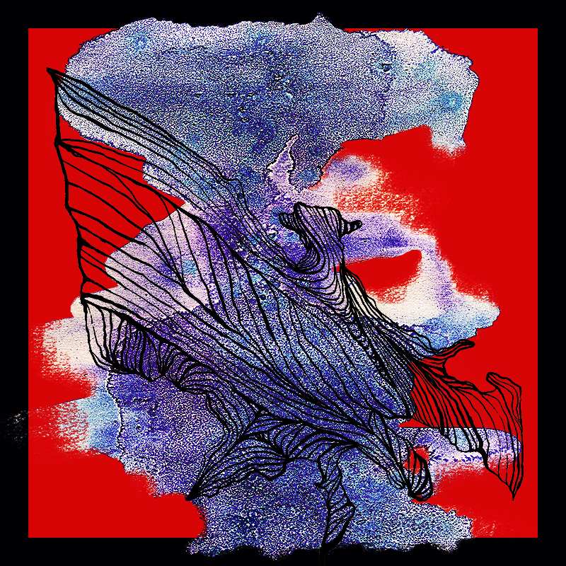

While walking back to my dorm after a heavy snowy day, I discovered interesting patterns on the path of going up the hill towards my dorm that the workers have spread ice melt. As salt comes into contact with snow, it creates a form of crystallization and leaves remnants as water evaporates. By observing the trails of marks, I could see different patterns of movement that has happened earlier on the spot. Several different types of movement were illustrated: car moving, walking, sweeping, dripping, and melting. I started my process by taking photographs of natural forms and textures.


With watercolor and salt, I created a background with the texture of salt supersaturating water. In the process of drying, the color blue from salt dissolved into the watercolor, forming subtle marks.